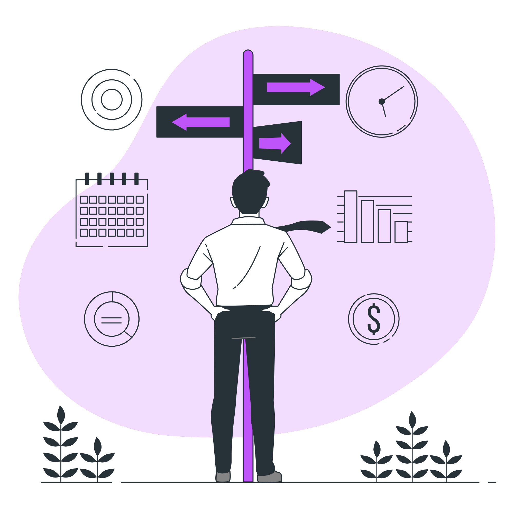
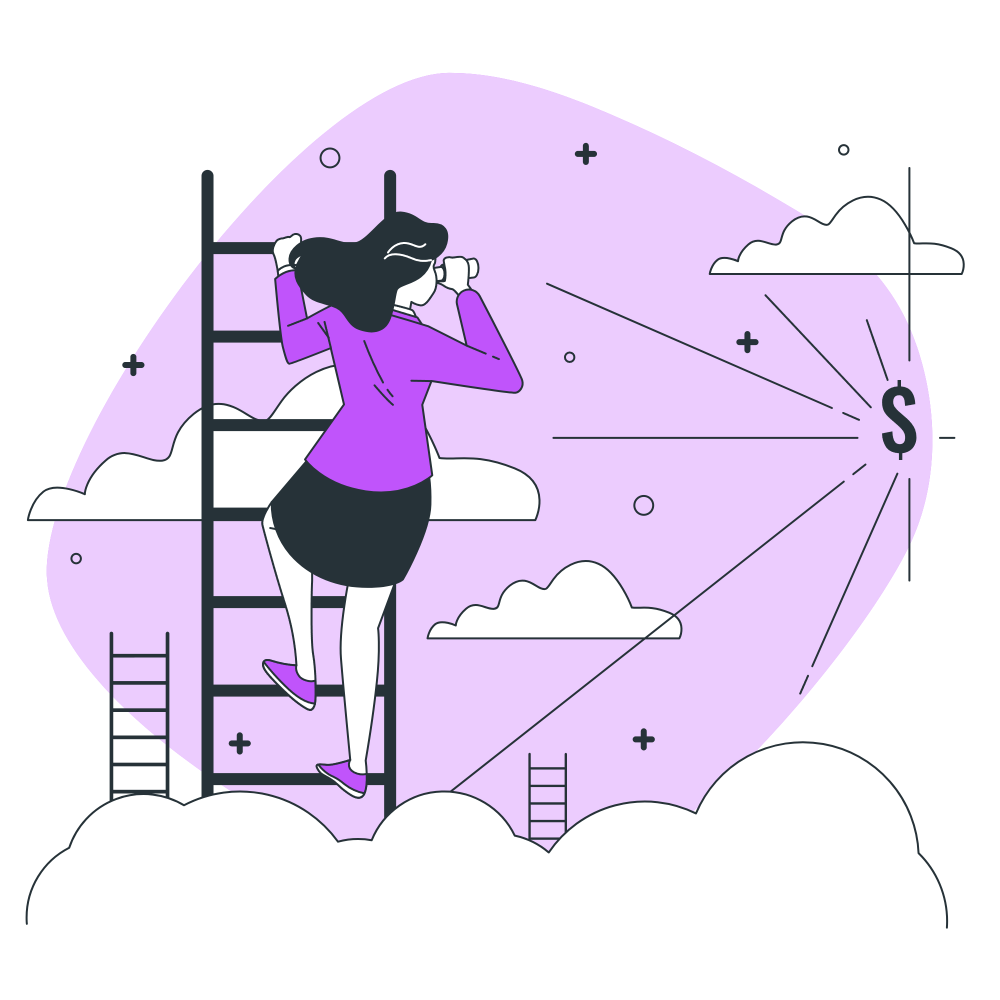

From Freelancer
to Founder
The story of building expertise, overcoming self-doubt, and creating impact through WordPress and community.

My Story
I started as a freelancer with big dreams and a lot of self-doubt. Like many beginners, I questioned whether I was good enough, whether clients would trust me, and whether I could actually build a sustainable career in web development.
Through real client projects — the messy, challenging, rewarding ones — I learned that success goes far beyond technical skills. It's about mindset, consistency, and the communities we build around us.
Building Expertise
I built my expertise in WordPress and Shopify, working with businesses of all sizes across multiple countries. Every project taught me something new — not just about code, but about understanding client needs, solving real problems, and delivering value.
- WordPress Development — Custom themes, plugins, and full-site builds
- Shopify Development — E-commerce solutions with conversion optimization
- Elementor Pro — Advanced page building and design systems
- WooCommerce — Full e-commerce functionality and custom integrations
- Performance Optimization — Speed, SEO, and user experience
Founding Xixify
Founded Xixify to help businesses grow online with professional web development services. As an AI-First Agentic Agency, we combine cutting-edge technology with human expertise to deliver results that matter.
Success is not only about technical skills. Mindset, consistency, and community support are equally important.

WordPress Community
Becoming an active contributor in the WordPress community changed everything. From local meetups to international WordCamps, I found a global family of developers, designers, and dreamers who support each other.
- WordCamp Speaker — Sharing stories of freelancing and community building
- Meetup Organizer — Co-organizing WordPress Meetup Bangladesh
- Core Contributor — Documentation, translations, and community support
- Mentor — Guiding 20+ freelancers through career transitions
Speaking & Inspiring
Today, I speak at events to inspire other freelancers to achieve sustainable success. My talks focus on overcoming self-doubt, building community, and creating lasting careers in tech.
I believe that when we share our stories — the struggles as well as the successes — we give others permission to keep going.